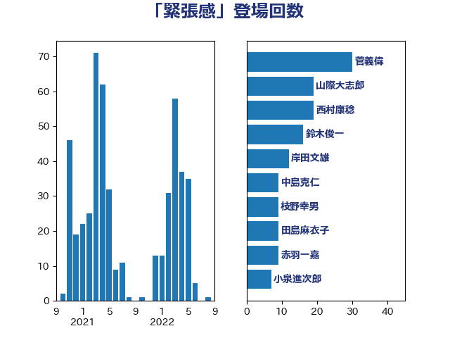

単語「緊張感」

| 菅義偉 | 自由民主党 | 30 回 |
| 山際大志郎 | 自由民主党 | 19 回 |
| 西村康稔 | 自由民主党 | 19 回 |
| 鈴木俊一 | 自由民主党 | 16 回 |
| 岸田文雄 | 自由民主党 | 12 回 |
| 中島克仁 | 立憲民主党 | 9 回 |
| 枝野幸男 | 立憲民主党 | 9 回 |
| 田島麻衣子 | 立憲民主党 | 9 回 |
| 赤羽一嘉 | 公明党 | 9 回 |
| 小泉進次郎 | 自由民主党 | 7 回 |
| 小西洋之 | 立憲民主党 | 7 回 |
| 古川禎久 | 自由民主党 | 6 回 |
| 大塚耕平 | 国民民主党 | 6 回 |
| 田村憲久 | 自由民主党 | 6 回 |
| 勝部賢志 | 立憲民主党 | 5 回 |
| 小沼巧 | 立憲民主党 | 5 回 |
| 山添拓 | 日本共産党 | 5 回 |
| 岸信夫 | 自由民主党 | 5 回 |
| 野上浩太郎 | 自由民主党 | 5 回 |
| 青柳仁士 | 日本維新の会 | 5 回 |
| 三宅伸吾 | 自由民主党 | 4 回 |
| 上川陽子 | 自由民主党 | 4 回 |
| 井上英孝 | 日本維新の会 | 4 回 |
| 柴田巧 | 日本維新の会 | 4 回 |
| 梶山弘志 | 自由民主党 | 4 回 |
| 森本真治 | 立憲民主党 | 4 回 |
| 自見はなこ | 自由民主党 | 4 回 |
| 金子恭之 | 自由民主党 | 4 回 |
| ながえ孝子 | 無所属 | 3 回 |
| 大岡敏孝 | 自由民主党 | 3 回 |
| 大野泰正 | 自由民主党 | 3 回 |
| 室井邦彦 | 日本維新の会 | 3 回 |
| 松野博一 | 自由民主党 | 3 回 |
| 武田良太 | 自由民主党 | 3 回 |
| 玉木雄一郎 | 国民民主党 | 3 回 |
| 田名部匡代 | 立憲民主党 | 3 回 |
| 茂木敏充 | 自由民主党 | 3 回 |
| 萩生田光一 | 自由民主党 | 3 回 |
| 足立康史 | 日本維新の会 | 3 回 |
| 三浦信祐 | 公明党 | 2 回 |
| 丸川珠代 | 自由民主党 | 2 回 |
| 今村雅弘 | 自由民主党 | 2 回 |
| 加田裕之 | 自由民主党 | 2 回 |
| 古川元久 | 国民民主党 | 2 回 |
| 大西健介 | 立憲民主党 | 2 回 |
| 宮本岳志 | 日本共産党 | 2 回 |
| 宮本徹 | 日本共産党 | 2 回 |
| 寺田学 | 立憲民主党 | 2 回 |
| 岡田克也 | 立憲民主党 | 2 回 |
| 岩屋毅 | 自由民主党 | 2 回 |
| 川田龍平 | 立憲民主党 | 2 回 |
| 徳永エリ | 立憲民主党 | 2 回 |
| 斎藤アレックス | 国民民主党 | 2 回 |
| 朝日健太郎 | 自由民主党 | 2 回 |
| 末松義規 | 立憲民主党 | 2 回 |
| 杉尾秀哉 | 立憲民主党 | 2 回 |
| 杉本和巳 | 日本維新の会 | 2 回 |
| 杉田水脈 | 自由民主党 | 2 回 |
| 沢田良 | 日本維新の会 | 2 回 |
| 石井章 | 日本維新の会 | 2 回 |
| 赤澤亮正 | 自由民主党 | 2 回 |
| 鈴木敦 | 国民民主党 | 2 回 |
| 鈴木英敬 | 自由民主党 | 2 回 |
| 阿達雅志 | 自由民主党 | 2 回 |
| 階猛 | 立憲民主党 | 2 回 |
| 高木かおり | 日本維新の会 | 2 回 |
| 麻生太郎 | 自由民主党 | 2 回 |
| 下村博文 | 自由民主党 | 1 回 |
| 中野英幸 | 自由民主党 | 1 回 |
| 井上信治 | 自由民主党 | 1 回 |
| 井上貴博 | 自由民主党 | 1 回 |
| 井出庸生 | 自由民主党 | 1 回 |
| 今枝宗一郎 | 自由民主党 | 1 回 |
| 伊藤俊輔 | 立憲民主党 | 1 回 |
| 佐藤英道 | 公明党 | 1 回 |
| 加藤勝信 | 自由民主党 | 1 回 |
| 古賀之士 | 立憲民主党 | 1 回 |
| 古賀友一郎 | 自由民主党 | 1 回 |
| 吉田豊史 | 日本維新の会 | 1 回 |
| 和田有一朗 | 日本維新の会 | 1 回 |
| 和田義明 | 自由民主党 | 1 回 |
| 國重徹 | 公明党 | 1 回 |
| 塩川鉄也 | 日本共産党 | 1 回 |
| 大家敏志 | 自由民主党 | 1 回 |
| 太栄志 | 立憲民主党 | 1 回 |
| 安達澄 | 無所属 | 1 回 |
| 宮崎雅夫 | 自由民主党 | 1 回 |
| 寺田静 | 無所属 | 1 回 |
| 小沢雅仁 | 立憲民主党 | 1 回 |
| 小熊慎司 | 立憲民主党 | 1 回 |
| 小田原潔 | 自由民主党 | 1 回 |
| 小野泰輔 | 日本維新の会 | 1 回 |
| 山井和則 | 立憲民主党 | 1 回 |
| 山崎誠 | 立憲民主党 | 1 回 |
| 山田美樹 | 自由民主党 | 1 回 |
| 山谷えり子 | 自由民主党 | 1 回 |
| 岡本あき子 | 立憲民主党 | 1 回 |
| 岡本三成 | 公明党 | 1 回 |
| 打越さく良 | 立憲民主党 | 1 回 |
| 斉藤鉄夫 | 公明党 | 1 回 |
| 有村治子 | 自由民主党 | 1 回 |
| 木原誠二 | 自由民主党 | 1 回 |
| 杉久武 | 公明党 | 1 回 |
| 東徹 | 日本維新の会 | 1 回 |
| 林芳正 | 自由民主党 | 1 回 |
| 柘植芳文 | 自由民主党 | 1 回 |
| 根本匠 | 自由民主党 | 1 回 |
| 森山浩行 | 立憲民主党 | 1 回 |
| 武見敬三 | 自由民主党 | 1 回 |
| 武部新 | 自由民主党 | 1 回 |
| 水岡俊一 | 立憲民主党 | 1 回 |
| 池下卓 | 日本維新の会 | 1 回 |
| 泉田裕彦 | 自由民主党 | 1 回 |
| 浅川義治 | 日本維新の会 | 1 回 |
| 浅野哲 | 国民民主党 | 1 回 |
| 清水貴之 | 日本維新の会 | 1 回 |
| 渡辺創 | 立憲民主党 | 1 回 |
| 源馬謙太郎 | 立憲民主党 | 1 回 |
| 玄葉光一郎 | 立憲民主党 | 1 回 |
| 白石洋一 | 立憲民主党 | 1 回 |
| 矢倉克夫 | 公明党 | 1 回 |
| 石井啓一 | 公明党 | 1 回 |
| 磯崎仁彦 | 自由民主党 | 1 回 |
| 福山哲郎 | 立憲民主党 | 1 回 |
| 稲津久 | 公明党 | 1 回 |
| 空本誠喜 | 日本維新の会 | 1 回 |
| 竹内譲 | 公明党 | 1 回 |
| 簗和生 | 自由民主党 | 1 回 |
| 紙智子 | 日本共産党 | 1 回 |
| 細田健一 | 自由民主党 | 1 回 |
| 美延映夫 | 日本維新の会 | 1 回 |
| 若松謙維 | 公明党 | 1 回 |
| 蓮舫 | 立憲民主党 | 1 回 |
| 藤巻健太 | 日本維新の会 | 1 回 |
| 西銘恒三郎 | 自由民主党 | 1 回 |
| 赤木正幸 | 日本維新の会 | 1 回 |
| 足立敏之 | 自由民主党 | 1 回 |
| 辻清人 | 自由民主党 | 1 回 |
| 野田佳彦 | 立憲民主党 | 1 回 |
| 長妻昭 | 立憲民主党 | 1 回 |
| 長浜博行 | 無所属 | 1 回 |
| 青木愛 | 立憲民主党 | 1 回 |
| 音喜多駿 | 日本維新の会 | 1 回 |
| 高橋光男 | 公明党 | 1 回 |
| 高橋千鶴子 | 日本共産党 | 1 回 |
| 鬼木誠 | 立憲民主党 | 1 回 |
| 鳩山二郎 | 自由民主党 | 1 回 |